For a month or two of the semester, we were supposed to choose a task that we would spend at least five minutes of the day and work on it every single day. Since I am interested in enamel pins, I decided to create a new pin every day. That semester I actually produced one of these pins and have designed more pins since.
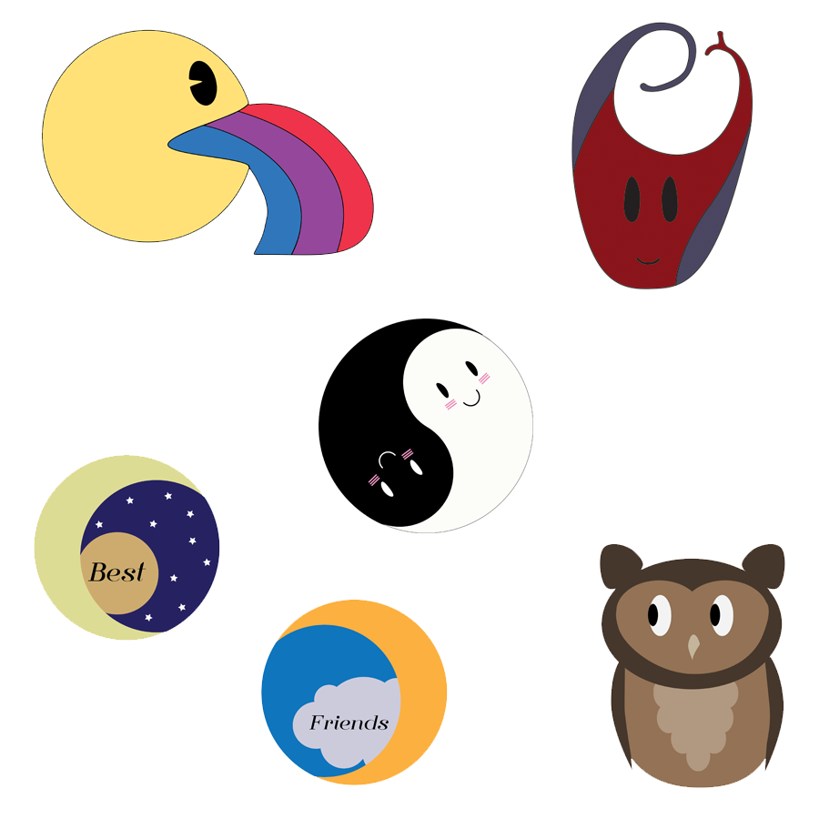
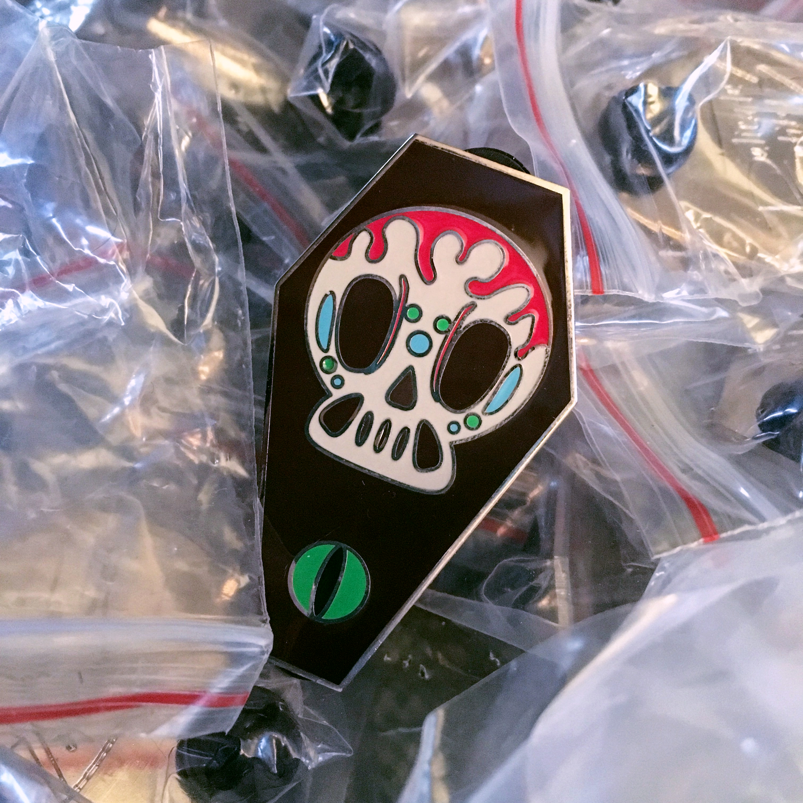
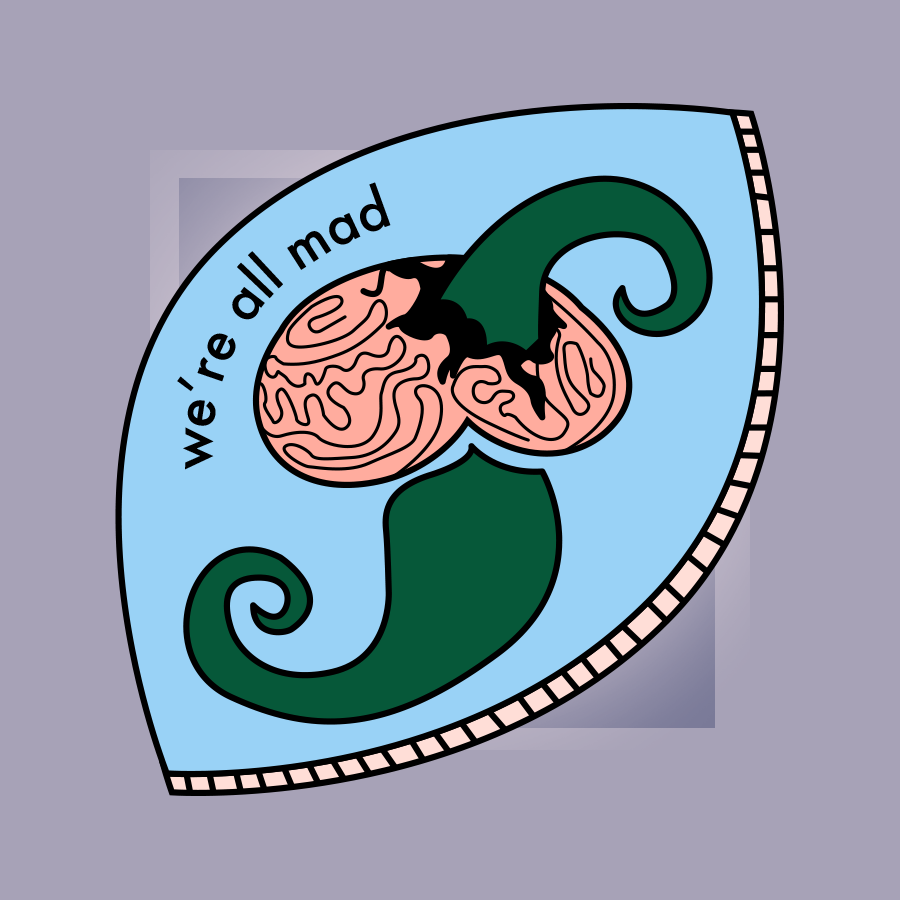
ATK 240 -- Sound Design
Below are my two favorite assignments from the semester. I discovered a love for sound design and enjoyed every single assignment. First audio file: SFX Narrative. A man living in a war zone is keeping his mind off things by eating popcorn when his neighborhood is ambushed and fighting insues. He is knocked unconcious when a bomb explodes nearby. Second audio: Underscore. Taking some sort of speech or spoken word, we were supposed to change the feeling or purpose of the speech by only changing the music underneath. I recorded my father reading the Rome section of Disney's Spaceship Earth ride in Epcot and underlaid it with Kevin MacLeod's song "Past the Edge II" to create a mystic, somber feeling. See script here.
ART 284 -- Cuddle Pants
The goal of this project was to design wearable technology. Each of us worked in pairs, and I was lucky to work with a pal named Cassidy. The two of us joked about how strange it would be to have a pair of pants that had a pillow on them and that would cuddle with a friend or significant other while you were on your phone or reading. Thus the Cuddle Pants were born!
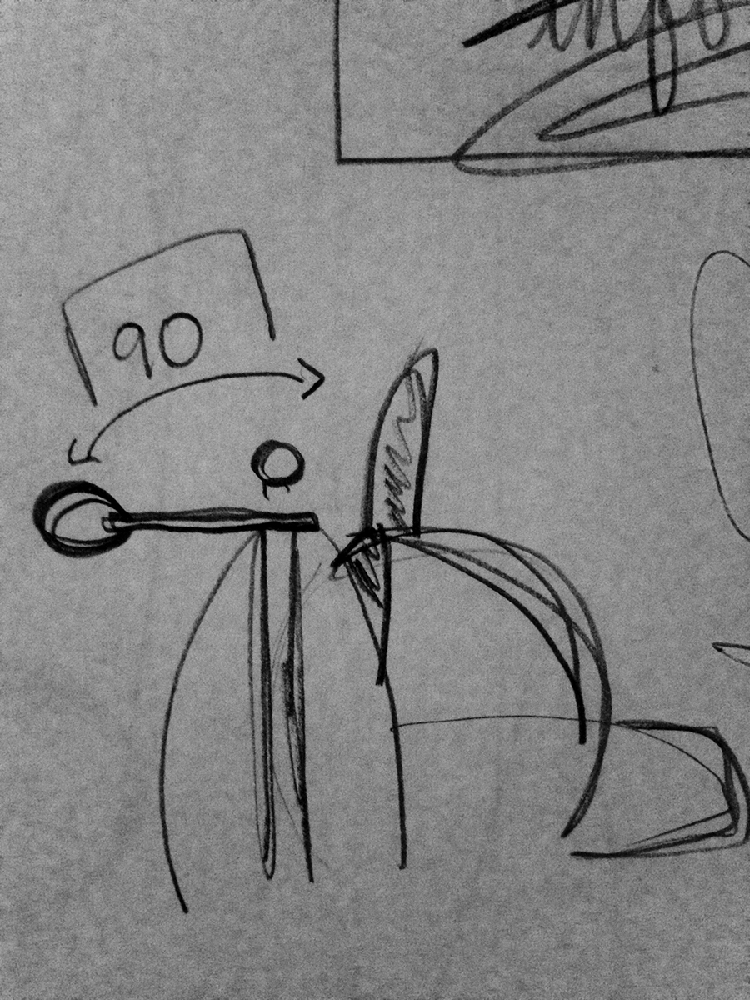
ATK 301 -- Final Portfolio
The big project from this class was to design and code a portfolio site. I went for a fun, cyber design since not only am I an artsy person but I'm a tech girl as well. Click on the first image below to view the coded site!
One assignment during class was to design and create a functioning drawing program. I'm intrigued with games like Tetris or the pixelated Snake game. Therefore, I wanted to digitize drawing and make it similar to Tetris. Use the arrow keys to move around, SPACEBAR to clear the board, SHIFT to erase, and the WSAD keys change color.
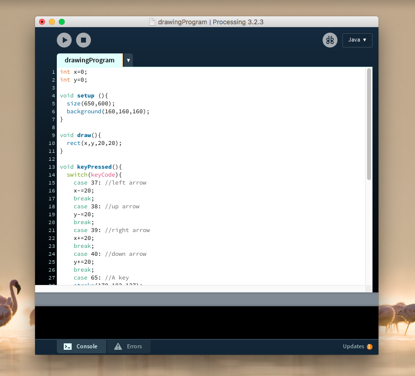
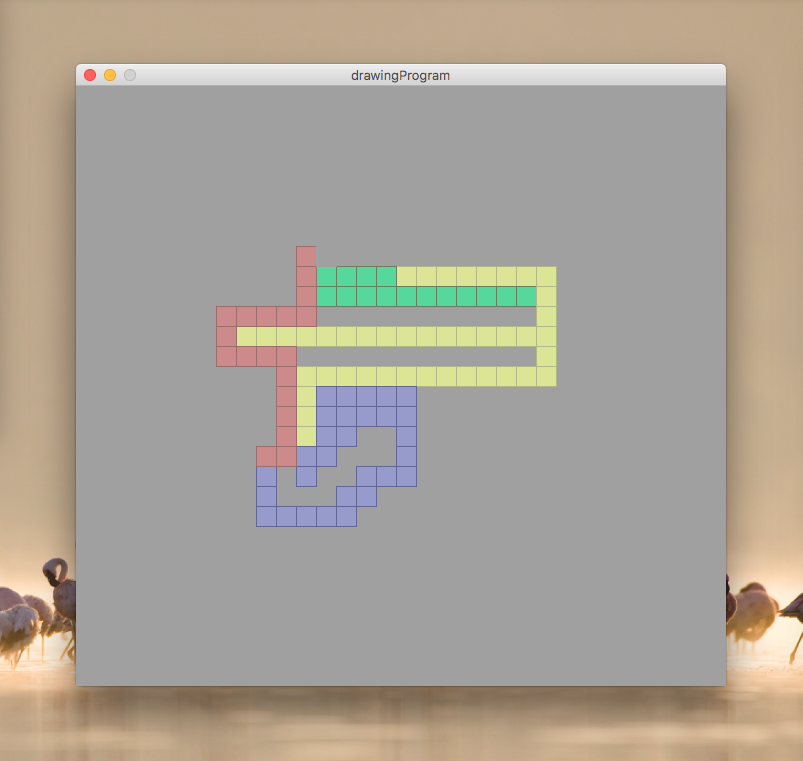
ATK 398 -- Immersion Arcade
For my internship, I worked for a virtual reality arcade startup company. There I was a social media intern, so I ran their social media handles. Also, I designed tee shirt concepts. The biggest project was coding a new website design for the company. Click the first image below to view the coded site!
This was the first project and my introduction to the world of Blender and 3D printing. The idea was to design and print a coffee cup sleeve in a design that affected - positively or negatively - the way you hold and feel the cup.
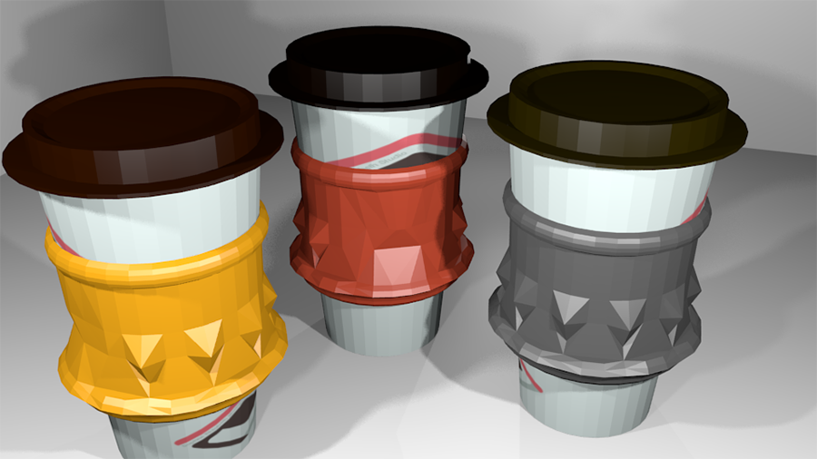
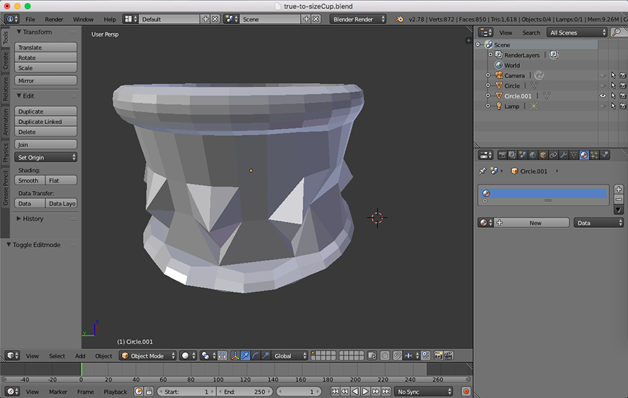
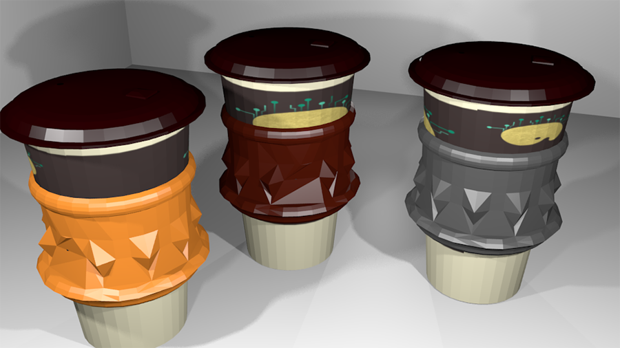
ATK 380 -- Farm Boy Documentary
For class, I was tasked to film and edit an interview. I chose to interview my father who had grown up on a farm, to discuss what it was like to grow up on a farm. I always hear wonderful stories about farmlife around family bonfires, so it seemed fitting to sit around a fire while we interviewed. It was fun to create an old nostalgic, country feel to this interview. Click the first image below to watch the interview!
The task: CSS Animation. The result: One Squid Wonder. This cyclop squid made his debut for Advanced Web Design while tinkering around and exploring CSS animation. Bubbles move beneath and around him as he swims upwards. Click on the image below to see him in action!
 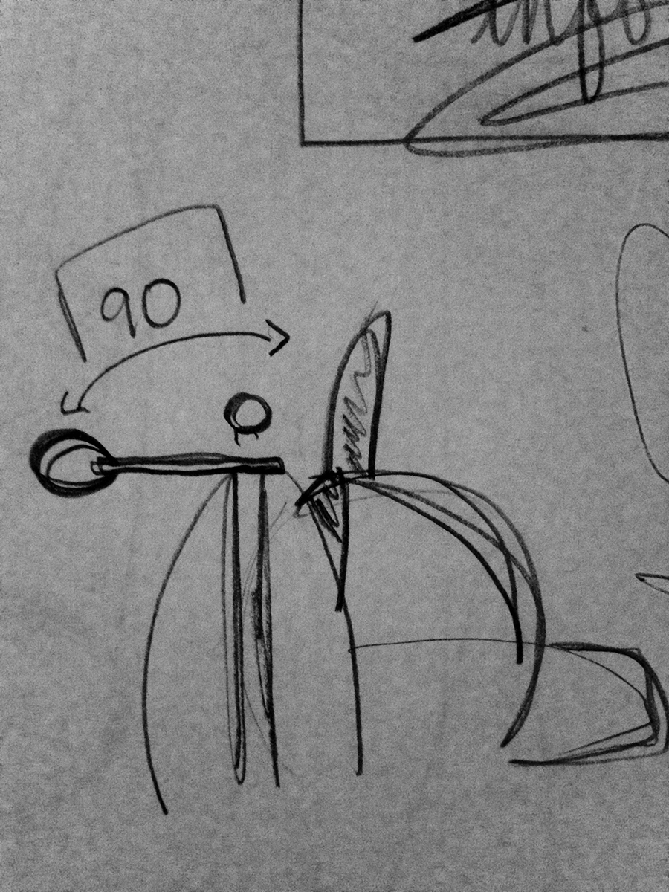
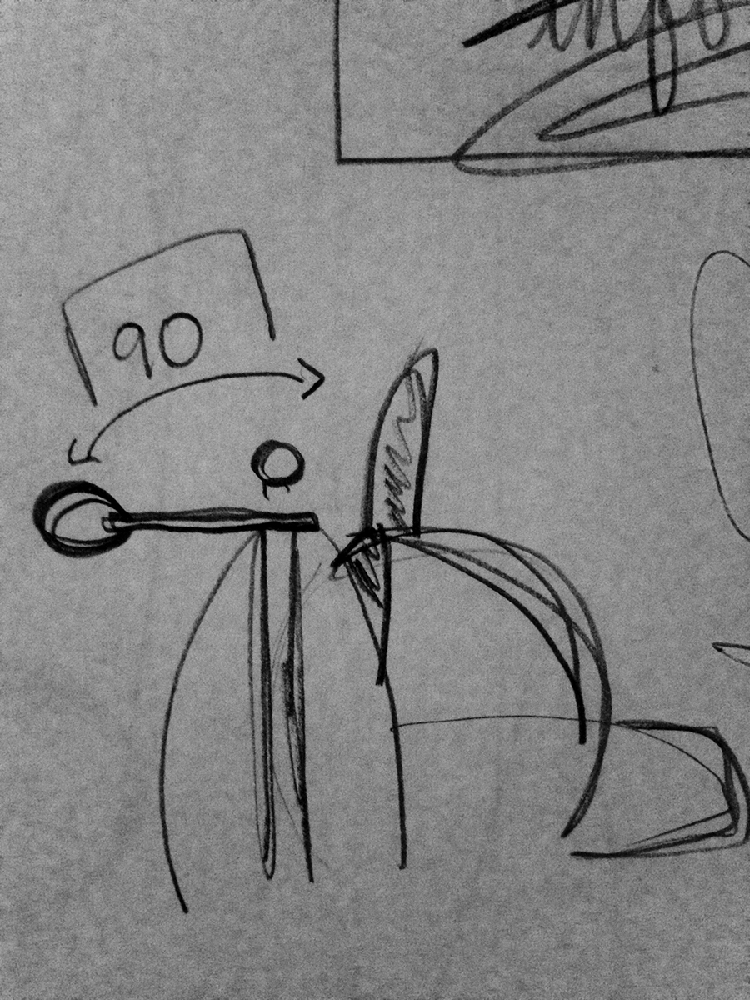